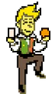
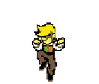
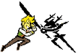
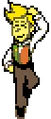
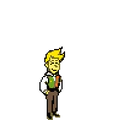
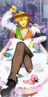
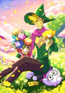

E aí, The Boys! Como eu disse anteriormente, este site é para divulgar as informações dos itens florais, além de discutir sua praticidade. Eu obviamente não vou fazer um trabalho melhor que a wiki, mas fiz o suficiente.

E aí, The Boys! Como eu disse anteriormente, este site é para divulgar as informações dos itens florais, além de discutir sua praticidade. Eu obviamente não vou fazer um trabalho melhor que a wiki, mas fiz o suficiente.


OK, agora eu (Andrey) vou quebrar a quarta parede e falar do trabalho em si, tá bom? Eu e o Thomas escolhemos esse tema pois gostamos muito de DELTARUNE e, no último capítulo, tivemos acesso aos itens de cada flor, cada uma com habilidades e status interessantes. Entretanto, só dá pra pegar 3 por save, então decidimos unir o útil ao agradável e fazer uma lista com os seus pontos altos e baixos.
nicialmente tivemos dificuldade em integrar o CSS, pois antes só usávamos o style em tudo, mas agora tínhamos que configurar em um arquivo separado. Mas logo nos acostumamos e, NOSSA, vc não tava mentindo quando disse que essas classes facilitam muito. Pessoalmente, eu tive bastante dificuldade em implementar o formulário mais pra baixo, pois queria deixá-lo bem bonito, então fui muito além da minha zona de conforto para aprender. Valeu a pena.


Estou bem orgulhoso do que fizemos, nos divertimos bastante, e até que é um site bonitinho, meio simples,
mas talvez esse seja o charme?
De qualquer forma, foi uma ótima experiência de aprendizado, e estou ansioso para criar sites
ainda melhores no futuro.
Oh, e sim, essa página tá recheada com flowerys. Sabe como ele é, né? Sempre tem que se mostrar,
e como na página principal ele mal apareceu, ele teve que receber toda a atenção nesta.

É isso então, bora finalizar essa pagina, Goodbye!


Feito por Andrey Rigo e Thomas Augusto
Última atualização: 21/09/2026
Esse site tem orgulho de ser feito em HTML e CSS sem uso de IA
Pssh! Passe o mouse em tudo que puder (TUDO MESMO), principalmente nas flores e seus equipamentos (imagens no geral),
talvez você encontre algo muito... MUITO interessante
Site fonte das informações
